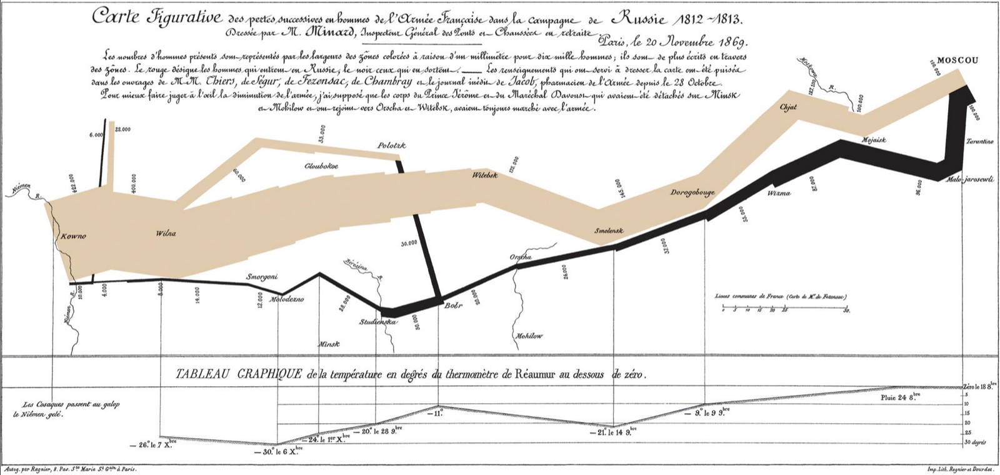

Contents
Data Visualization
COMS BC3122 · Barnard College
Niall L. Williams
Fall 2026
Professor: Dr. Niall L. Williams
Office: Milbank 226B
Email: nlw@barnard.edu
Office hours: TBD
Class times: Mon, Wed 1:10pm – 2:25pm
Class location: 516 Milstein Center
Welcome to COMS BC3122: Data Visualization. Below is one of the most famous data visualizations of all time, about Napoleon’s invasion of Russia. The time, weather, geography, total number of soldiers, their location, and the total loss of life over distance and time are visualized. This is an amazing amount of data shown in one simple image! This course provides an introduction to the science of data visualizations as a tool for communication.

Charles Joseph Minard (1869), Carte figurative des pertes successives en hommes de l’Armée Française dans la campagne de Russie 1812–1813.
Course Description
Data visualizations are a powerful tool for gaining knowledge, discovering hidden relationships and patterns, communicating messages, and influencing others’ opinions and values. Visualizations help inform our personal decisions (Where will I go to college? Can I afford this housing?), community decisions, and societal decisions (How do we respond to climate change? Pandemics?). But if we cannot communicate our message clearly, a visualization’s usefulness decreases and it can even be detrimental to our goals. In this course, students learn the fundamentals behind using graphs and charts to visually communicate ideas and gain practical experience with creating their own visualizations. We discuss the theory of visual communication, how the brain processes visual information, technical aspects of visualization implementation, ethics of data visualization, and data visualization research. Assignments consist of programming projects in Javascript with the D3 library. The class has a midterm and a final project (no final exam).
Prerequisites: COMS W3134 (or equivalent). Experience with programming in Javascript is strongly recommended.
Learning Objectives
- Analyze novel datasets to identify key characteristics and formulate investigative, data-driven questions.
- Explain the mechanisms of human visual perception and assess how these mechanisms constrain or enhance the interpretation of a visualization.
- Design visualizations that leverage established principles of visual processing to maximize communicative clarity and effectiveness.
- Construct interactive, web-based visualizations using JavaScript and the D3 library to answer specific inquiries.
- Critique and defend visualization design decisions by articulating the logical connection between quantitative evidence and visual encoding choices.
Schedule
Note that the schedule is subject to change – depending on the class’ learning pace and interests, topics may be added, removed, or rearranged.
| Week | Date | Topic | Event | Reading |
|---|---|---|---|---|
| Week 1 (Wed) | Sep 9, 2026 | Class overview | Intake survey released | |
| Week 2 (Mon) | Sep 14, 2026 | Data types, visualization techniques | Munzner 2015, Chapter 2 | |
| Week 2 (Wed) | Sep 16, 2026 | Introduction to programming tools | Intake survey due Assignment 1 released |
|
| Week 3 (Mon) | Sep 21, 2026 | The human visual system | Ware 2020, pp. 31–62 | |
| Week 3 (Wed) | Sep 23, 2026 | Visual encoding of data | Assignment 1 due | 39 studies about human perception in 30 minutes |
| Week 4 (Mon) | Sep 28, 2026 | Spatial data | Assignment 2 released | Munzner 2015, Chapter 8 |
| Week 4 (Wed) | Sep 30, 2026 | Spatial data | ||
| Week 5 (Mon) | Oct 5, 2026 | Storytelling, ethics, and misinformation | Ware 2020, Chapter 9 | |
| Week 5 (Wed) | Oct 7, 2026 | Storytelling, ethics, and misinformation | ||
| Week 6 (Mon) | Oct 12, 2026 | Temporal data | Assignment 2 due Assignment 3 released |
Ware 2020, pp. 183–203 |
| Week 6 (Wed) | Oct 14, 2026 | Temporal data | ||
| Week 7 (Mon) | Oct 19, 2026 | Final Project: Proposals | Project proposals due | |
| Week 7 (Wed) | Oct 21, 2026 | Midterm | ||
| Week 8 (Mon) | Oct 26, 2026 | Network data | ||
| Week 8 (Wed) | Oct 28, 2026 | Network data | ||
| Week 9 (Mon) | Nov 2, 2026 | No class | ||
| Week 9 (Wed) | Nov 4, 2026 | Catch-up day / Project working session | Assignment 3 due Assignment 4 released |
|
| Week 10 (Mon) | Nov 9, 2026 | Animation & interaction | Ware 2020, Chapter 10 | |
| Week 10 (Wed) | Nov 11, 2026 | Animation & interaction | ||
| Week 11 (Mon) | Nov 16, 2026 | Uncertainty visualization | Padilla, Kay, Hullman (2022). Uncertainty Visualization. | |
| Week 11 (Wed) | Nov 18, 2026 | Uncertainty visualization | ||
| Week 12 (Mon) | Nov 23, 2026 | Final Project: Progress Check | Assignment 4 due | |
| Week 12 (Wed) | Nov 25, 2026 | No class | 🍗Thanksgiving break 🍗 | |
| Week 13 (Mon) | Nov 30, 2026 | 3D visualization: Projections and graphics | ||
| Week 13 (Wed) | Dec 2, 2026 | 3D visualization: Projections and graphics | ||
| Week 14 (Mon) | Dec 7, 2026 | Modern topics: deep learning, immersive visualization, human-computer interaction | ||
| Week 14 (Wed) | Dec 9, 2026 | Final Project: Work session | ||
| Week 15 (Mon) | Dec 14, 2026 | Final Project: Work session |
Coursework and Grading
This is a lecture-type course. Evaluation consists of a collection of assignments, quizzes, a midterm, a final project, and class participation.
Grading Overview
| Product | Grade Percentage |
|---|---|
| Assignments | 35% (A1: 5%, A2: 10%, A3: 10%, A4: 10%) |
| Final Project | 25% |
| Pop Quizzes | 15% |
| Midterm | 15% |
| Class Participation & Engagement | 10% |
Assignments (35%)
There are four assignments in this class. Assignments are to be completed individually by each student; you will not have a partner for any assignments. The first assignment serves as an introduction to the tooling used in the class, and the next three are designed to develop your skills in exploring data, asking interesting questions, and answering those questions using visualizations. Additionally, each assignment includes a written portion where you explain the questions you sought to answer with visualizations and the rationale behind your design decisions. Finally, each assignment asks you to provide constructive criticism on a professional visualization that you find in the wild. Some assignments have opportunities for extra credit.
- Assignment 1 (5%): Tutorial on web programming and D3.
- Assignment 2 (10%): Exploring a dataset and asking interesting questions.
- Assignment 3 (10%): Multiple datasets + coordinated views.
- Assignment 4 (10%): Interaction and animation.
Final Project (25%)
The final project for this course is to be completed in groups of two and will be due at the end of the semester on the final day of exams. You will identify a topic of interest and find one or more datasets that will be used to explore your chosen topic. The final submission is in the form of a webpage of visualizations and discussions on your topic, a presentation on the final day of class, and a written report detailing your process of finding and processing a dataset and creating your visualizations. The written report will be due at the end of the course’s final exam slot. You and your partner will propose a topic near the middle of the semester, and there will be progress updates throughout the remaining weeks of the semester that will contribute to your final project grade.
Pop Quizzes (15%)
There are short quizzes throughout the semester to assess your theoretical understanding of the course material. These quizzes are given in class and without prior announcement. New quizzes will include repeated (or slightly modified) questions from previous quizzes, so you are highly encouraged to correct your quizzes and check the answers with me or your classmates. There are no make-up pop quizzes, but your lowest quiz grade will be dropped at the end of the semester.
Midterm (15%)
There is an in-class, written exam on October 21. The exam will test your understanding of the theoretical concepts of data visualization and your programming skills with D3. More details will be shared closer to the exam date.
Class Participation & Engagement (10%)
Visualization design is an iterative and creative process that requires practice to get good at. To help you practice your visualization skills, we frequently hold discussions, case studies, and “lab” sessions during class. Bouncing ideas off of others and providing constructive criticism is a core element of these in-class exercises. Therefore, attendance is crucial not only for your learning but for your classmates’, too.
Your participation grade is based on your effort and engagement with the course. Things like showing up to class, volunteering to critique a visualization you like at the start of class, coming to office hours, doing quiz corrections, filling out feedback surveys, and putting in an honest effort to engage with the material will yield full credit for this portion of your grade. I recognize that not everyone will feel comfortable asking and answering questions in the public classroom setting, so you will not be graded simply on how often you raise your hand. But, we will have many in-class exercises and discussions which you are expected to earnestly participate in.
Resources and Materials
Textbooks
The following books provide good background information and greater detail on the topics covered in the lectures. The schedule points to specific sections of these books that you should read before the associated lecture. If a lecture assigns a reading not available in these textbooks, a link to the reading is provided in the schedule. The textbooks are available on CLIO.
- Visualization analysis and design by Tamara Munzner
- Information visualization: perception for design by Colin Ware
Data sources
For the assignments and final project, you will need to find one or more datasets to create visualizations of. Below are some helpful resources for finding datasets, but you are also free to look elsewhere for datasets.
Course Policies
Late Submissions
Submissions are generally due at 11:59pm on their due date. A total of three late credits are given, which allow you to extend your submission deadline on an assignment by 24 hours each. You cannot use any late credits on submissions related to the final project.
A linear late penalty will be applied to late assignments, up to 3 days. For example, if your assignment is 12 hours late, you will receive a 16.66% penalty (12/72 = 0.1666). Late assignments due to illness or unexpected events can be excused with doctor’s notes or other appropriate forms of documentation.
Collaborations
Learning does not happen in a vacuum, and working with others is often one of the most effective ways to deepen your own understanding of a concept. While I am always ready to work with you, I also strongly encourage you to seek out your classmates and collaborate with them as you move through the course material. Note that quizzes must be completed solo, without any input from another person. However, it is a good idea to study for such a quiz by first working with another person or two. Students must include a written acknowledgment in their assignment submissions if they consulted anyone else about their work.
Copying analyses of a dataset from other people is not collaboration and is not allowed. You may browse the many visualization examples online (e.g., [1], [2], [3]) to get inspiration for your own visualization designs, but the questions you ask about a dataset and the subsequent work to create the visualizations to answer those questions must be your own.
Generative AI
The use of generative AI in this class is prohibited. Students must complete all assignments through their own critical thinking, analysis, and writing. The use of AI systems (including but not limited to ChatGPT, Claude, Gemini, or similar platforms) is not permitted for any phase of assigned work.
For many of you, this class may be your first experience with designing and creating visualizations. Therefore, taking the time to carefully work through the material (reading, taking notes, attending lectures, doing the assignments, studying for quizzes) is crucial for building the foundational skills necessary to become visualization experts. If you find yourself having difficulty with understanding the concepts covered in class or with finishing assignments on time, you should reach out to me (via office hours or email) so we can work out a plan to resolve these issues.
Student-Professor Partnership
To reach the goals of the course’s learning outcomes, we need to work together. I highly encourage you to ask questions in class where all students can benefit from hearing questions and answers. If further clarification is needed, please make use of my office hours–I am fascinated by the course material so it is fun for me to talk about it with you! Office hours are also a good time to talk over questions you have about computer science, graduate school, career options, etc. Don’t be surprised if we also get talking about what interests you outside of academics, because I enjoy getting to know each of my students. Should you wish to discuss study strategies for this course and/or others, please come by my office hours.
Finally, I realize that talking with professors can be intimidating at times, but making use of office hours to have such conversations helps you practice skills needed to interact as a young professional. In other words, it is another way to prepare for post-Barnard life.
Barnard Honor Code
You are expected to hold yourself to the highest standard of academic integrity and honesty, asreflected in the Barnard Honor Code. Approved by the student body in 1912 and updated in 2016, theCode states:
We, the students of Barnard College, resolve to uphold the honor of the College by engaging with integrity in all of our academic pursuits. We affirm that academic integrity is the honorable creation and presentation of our own work. We acknowledge that it is our responsibility to seek clarification of proper forms of collaboration and use of academic resources in all assignments or exams. We consider academic integrity to include the proper use and care for all print, electronic, or other academic resources. We will respect the rights of others to engage in pursuit of learning in order to uphold our commitment to honor. We pledge to do all that is in our power to create a spirit of honesty and honor for its own sake.
Center for Accessibility Resources & Disability Services
If you anticipate barriers to your academic experience due to a documented disability or emerging health challenge, please contact your instructor and/or the Center for Accessibility Resources & Disability Services (CARDS) as early as possible. If you have questions regarding registering a disability or receiving accommodations for the semester, contact CARDS at (212) 854-4634 or cards@barnard.edu. You can learn more about on-campus support at barnard.edu/disability-services. CARDS is located in 101 Altschul Hall.
Wellness Statement
It is important for you as undergraduates to recognize and identify the different pressures, burdens, and stressors you may be facing, whether personal, emotional, physical, financial, mental, or academic. As a community, we urge you to prioritize yourself—your health, sanity, and wellness—throughout your career on campus. Sleep, exercise, and eating well are all part of a healthy regimen to cope with stress. Resources exist to support you, and we encourage you to make use of them. Should you have any questions about navigating these resources, please visit these sites:
Affordable Access to Course Texts & Materials
All students deserve to be able to study and make use of course texts and materials regardless of cost. Barnard librarians have partnered with students, faculty, and staff to find ways to increase student access to textbooks. By the first day of advance registration for each term, faculty are expected to provide information about required texts for each course on CourseWorks (including ISBN or author, title, publisher, copyright date, and price), which can be viewed by students. A number of cost-free or low-cost methods for accessing some types of course texts are detailed in the Barnard Library Textbook Affordability Guide. Undergraduate students who identify as first-generation and/or low-income may check out items from the FLIP lending libraries in the Barnard Library and in Butler Library for an entire semester. Students may also consult with their professors, librarians, the Dean of Studies, and the Financial Aid Office about additional affordable alternatives for access to course texts.
Thanks and Credit
This course benefits from material and wisdom from several professors, including Evan Peck, Tamara Munzner, and Tabitha Peck.